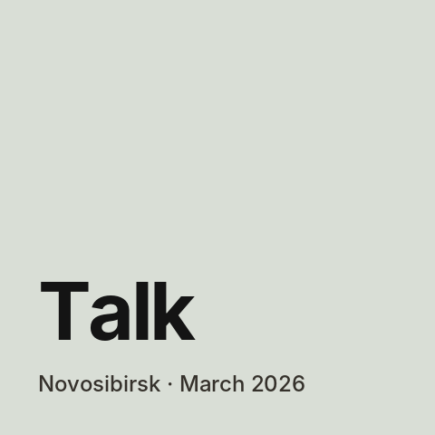

Home
Conferences
I give talks on artificial intelligence in company management, based on my dissertation research at RANEPA. I gave all the talks online; they are published in the proceedings of international scientific and practical conferences.
3talks at international conferences
2026year of my first talks
 Organisational readiness of Russian companies to bring artificial intelligence into the management system: barriers and directions of development
16th International Scientific and Practical Conference “Development of Modern Science and Education: Current Issues, Achievements and Innovations”
talk summary · published proceedings
Organisational readiness of Russian companies to bring artificial intelligence into the management system: barriers and directions of development
16th International Scientific and Practical Conference “Development of Modern Science and Education: Current Issues, Achievements and Innovations”
talk summary · published proceedings
 Organisational and managerial mechanisms for reducing the risks of using artificial intelligence in bank management
110th International Scientific and Practical Conference “Current Issues of Economic Sciences and Modern Management”
talk summary · published proceedings
Organisational and managerial mechanisms for reducing the risks of using artificial intelligence in bank management
110th International Scientific and Practical Conference “Current Issues of Economic Sciences and Modern Management”
talk summary · published proceedings

Technological requirements for a company's infrastructure when implementing artificial intelligence 104th International Scientific and Practical Conference “Current Issues of Economic Sciences and Modern Management” talk summary · published proceedings